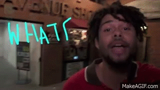

Parker Corey
Here is a selection of work I've done in video, music and design. Much of it is for Injury Reserve or By Storm of course. I am willing to work on projects that are interesting or pay well without being too boring.
Reach out via ohcoire@gmail.com or instagram
~ ~ ~
Zig Zag by By Storm, music and video. February 26, 2025.
JRJRJR by Jane Remover, video. January 1, 2025.
By Storm official logo, design. December 24, 2024.
All-Terrain by RiTchie & FearDorian, video. October 2, 2024.

Electrische by Body Meat, video. July 8, 2024.
How? / The Keepers by RiTchie feat. Niontay, video. April 16, 2024.
Triple Digits [112] by RiTchie, production on tracks 13 and 14 and design. April 5, 2024.
Looping by RiTchie, video. March 18, 2024.
Dizzy by RiTchie feat. Amine, video. February 26, 2024.
RiTchie Valens by RiTchie, video. February 12, 2024.

New Joy by Slauson Malone 1, video. September 5, 2023.
LET IT BE (Parker Corey Remix) for the Frost Children, remix. August 25, 2023.
Injury Reserve Complete Discography vinyl box set, design. August 18, 2023.

Bye Storm/Double Trio by Injury Reserve/By Storm, music and video. August 1, 2023.
Injury Reserve, Bye Storm Mythscience talk with Harmony Holiday. July 15, 2023.
Déjà Vu by Loraine James feat. RiTchie, video. July 12, 2023.
Ghost (Injury Reserve Remix) for Body Meat, remix and artwork. September 28, 2022.

Dos Monos european tour t-shirt, design. October/November 2022.
how it feels (+ reprise) by Anysia Kym, video. September 21, 2022.
Injury Reserve guest mix on NTS. April 2, 2022.
i know you hate me by midwxst, video. February 23, 2022.
Outside by Injury Reserve, music and video. February 9, 2022.
bttigTour. October 2021 to November 2022.

By the Time I Get to Phoenix by Injury Reserve, album. September 15, 2021.
By the Time I Get to Phoemix, mix for NTS. September 13, 2021.

Superman That by Injury Reserve, music and video. September 1, 2021.
Knees by Injury Reserve, music and video. August 11, 2021.
HELP ME UP by Tony Velour, video. March 31, 2021.
Limbo by Amine, production on tracks 4 and 13. August 6, 2020.
Food & Liquor guest mix on NTS. April 17, 2020.

Rock n' Roll by Injury Reserve, music and video. February 27, 2020.
Mix for KEXP. October 11, 2019.
Injury Reserve World Tour, music and design. Jun to Dec 2019.
Injury Reserve by Injury Reserve, album. May 17, 2019.
Koruna & Lime by Injury Reserve feat A-Trak, music and video. April 18, 2019.
Jailbreak the Tesla by Injury Reserve feat Amine, music and video. March 21, 2019.

Jawbreaker by Injury Reserve feat Rico Nasty & Pro Teens, music and video. January 23, 2019.
Drive It Like It's Stolen by Injury Reserve, EP. September 29, 2017.
See You Sweat by Injury Reserve, music and video. September 18, 2017.
North Pole by Injury Reserve, music and video. September 5, 2017.

Floss by Injury Reserve, mixtape. December 15, 2016.
All This Money by Injury Reserve, music and video. August 20, 2016.
Oh Shit!!! by Injury Reserve, music and video. July 26, 2016.
Live From the Dentist Office by Injury Reserve, mixtape. July 17, 2015.
Everybody Knows by Injury Reserve, music and video. June 18, 2015.

Whatever Dude by Injury Reserve, music and video. February 17, 2015.
~ ~ ~
Ongoing:
COO at jMedia Group.
Works in progress:
Rock Hard Place (feature film)
Nightgame (feature film)